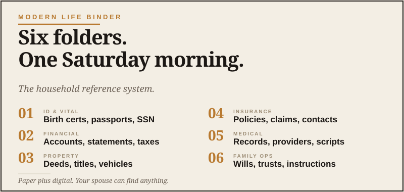

Life Admin
Eight folders. One Saturday morning.

Here’s a thing that snuck up on most of us. Modern life produces an enormous amount of paperwork that isn’t actually paperwork.
It’s a PDF of an insurance declaration page. It’s an email confirming a policy change. It’s a screenshot of a confirmation number for an appliance warranty. It’s a Word doc your accountant sent you in 2023. It’s the registration for a vehicle you keep forgetting to put in the glove box.
None of it is in one place. None of it is findable when you need it. The old file cabinet your dad had in the den — the one that held everything in folders labeled in his handwriting — was actually a pretty solid system. We replaced it with apps and email and got worse at this, not better. Progress, apparently.
The Modern Life Binder is the upgrade. It’s a reference system, partly digital and partly physical, that holds the documents and information your household actually relies on. It is not glamorous. It is incredibly useful. That’s a category of thing I’ve come to respect more with age.
The hybrid model: paper plus digital
You need both. Here’s why.
Some documents need to exist on paper. Original deeds, marriage certificates, birth certificates, passports, vehicle titles, signed wills — these are the documents you might need to prove something with a physical original. They live in a fireproof safe or a safe deposit box.
Most other things can — and should — live digitally. Insurance policies, tax returns, warranty info, manuals, account statements. Storing them digitally means you can find them in five seconds with a search bar instead of digging through folders for twenty minutes.
The trick is having one obvious system for both, so you’re not constantly guessing where something lives.
The eight folders
This is the structure I’d use. Eight folders, mirrored on paper and digital, in this order:
01 Emergency
The Family Ops File goes here. Quick-reference contacts, account numbers, where things live. The first place anybody should look.
02 Money
Bank statements, brokerage accounts, retirement account info, credit card statements, anything tax-relevant. Tax returns from the last seven years live in this folder.
03 Insurance
Health, home, auto, life, umbrella, business. Each policy gets a sub-folder with the current declaration page, the agent’s contact info, and any claim history.
04 Home
Mortgage docs, deed, HOA stuff, major appliance warranties and manuals, contractor receipts for big work. If you ever sell the house, you’ll be glad you kept the kitchen renovation receipts.
05 Vehicles
Title and registration for each vehicle. Service records. Insurance card. Any modification or major repair history. If you’re a car guy, you already do most of this. If you’re me, you may have more vehicle folders than some families have vehicles. We all have our things.
06 Medical
Important medical history, current medication list, vaccination records, doctor contacts. One folder per family member if it makes sense.
07 Family
Vital records: birth certificates, marriage license, passports, Social Security cards. Originals stay in the safe. Scans live in the digital folder.
08 Legacy
Wills, trust documents, power of attorney, advanced directives, business succession docs. The serious paperwork. Originals safe, copies digital.
Where the digital version lives
Pick one place and stick with it. The candidates:
- iCloud Drive — fine if you’re an Apple household. Works seamlessly across devices.
- Google Drive — same idea, Google ecosystem. Strong search.
- Dropbox — older, still solid. Good for syncing across mixed Apple and Windows.
- A NAS or external drive — more work, more control. Only if you’re into that.
Don’t get fancy. Whichever one you’re already paying for is probably the right answer. The point is to have one place.
Inside that, create the eight folders. Save things into them as they come in, not later. Yes, this requires a small habit change. Yes, it’s worth it.
The Saturday-morning setup
Here’s how to actually do this without it taking over your weekend.
Hour one: Create the eight folders, both physically (a real binder or expanding file) and digitally. Label everything. Put it where you’ll actually use it.
Hour two: Take the obvious low-hanging fruit. Find your insurance documents, mortgage paperwork, and tax returns from the last couple years. Get them into the right folder, paper or digital.
Hour three (optional): Tackle one specific category in depth. Maybe Vehicles — gather every title and registration, scan them, file them properly. Or Medical — build the master list of doctors and medications.
Stop after three hours, even if you’re not done. The system exists. You can fill it out over the next few months, one document at a time. Don’t try to migrate fifteen years of paperwork in one sitting. That’s the trap that kills these projects.
The seasonal review
Twice a year — call it New Year’s and the Fourth of July, since you’ll remember those — sit down for 30 minutes. Update anything that changed. Toss anything you don’t need to keep. Make sure your spouse knows where things are.
That’s the whole maintenance. Two hours a year, total.
What this actually buys you
A few things, all worth it.
It buys you speed when something matters. Need to file a claim? Five seconds to find the policy. Need to prove you owned the truck in 2018? Two minutes to find the title transfer. Need a doctor’s name for a referral? It’s in the folder.
It buys you peace when something goes wrong. The Family Ops File on its own is good. The Modern Life Binder is the layer underneath — the actual records that back up the contacts and the operating manual.
And it buys you the small dignity of being a guy whose household isn’t held together by sticky notes and the hope that you remember everything. That counts for more than people realize.